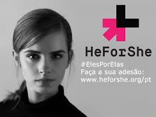
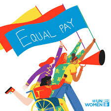

Campanha HeForShe da ONU Mulheres
Começo
Explicação:
A Campanha HeForShe, lançada pela ONU Mulheres, é uma campanha global que visa envolver homens e meninos na luta pela igualdade de gênero e pelos direitos das mulheres. A campanha busca promover a igualdade de gênero e a mudança de normas sociais prejudiciais através da ação coletiva e do apoio masculino.
Observações:
A campanha enfatiza a importância da inclusão dos homens no diálogo sobre igualdade de gênero.
Ele é projetado para desafiar normas de gênero tradicionais e promover atitudes igualitárias.
Objetivos:
Mobilizar homens e meninos para apoiar a igualdade de gênero.
Desafiar normas e estereótipos de gênero prejudiciais.
Promover uma cultura de respeito e igualdade.
Ações:
Campanhas de conscientização e eventos públicos.
Parcerias com organizações para promover programas educativos.
Engajamento em mídias sociais para expandir o alcance da campanha.

Campanha Equal Pay International Coalition (EPIC)
Explicação:
A Equal Pay International Coalition (EPIC) é uma iniciativa global para promover a igualdade salarial entre homens e mulheres. Lançada pelo ILO, ONU Mulheres e OCDE, a EPIC visa enfrentar a disparidade salarial e promover práticas que assegurem a equidade salarial no local de trabalho.
Observações:
A EPIC busca unir governos, empresas e organizações da sociedade civil para reduzir a desigualdade salarial.
Enfatiza a necessidade de dados e monitoramento para entender e abordar as lacunas salariais.
Objetivos:
Reduzir a diferença salarial entre homens e mulheres.
Promover a transparência salarial e melhores práticas de emprego.
Fomentar políticas e legislação que apoiem a igualdade salarial.
Ações:
Realização de estudos e publicações sobre desigualdade salarial.
Desenvolvimento de parcerias para promover a igualdade de remuneração.
Campanhas de sensibilização e advocacia para políticas inclusivas.

Política de Ações Afirmativas no Brasil
Explicação:
A Política de Ações Afirmativas no Brasil visa promover a igualdade de oportunidades para grupos historicamente marginalizados. Implementada por meio de cotas e outras medidas, a política busca corrigir desigualdades estruturais e promover a inclusão social e econômica.
Observações:
A política inclui cotas em instituições de ensino e em concursos públicos para grupos específicos.
Visa reduzir a desigualdade racial e socioeconômica no país.
Objetivos:
Promover a inclusão de grupos marginalizados em instituições educacionais e no mercado de trabalho.
Reduzir as disparidades de oportunidades e resultados socioeconômicos.
Fortalecer a diversidade e a equidade social.
Ações:
Implementação de sistemas de cotas em universidades e concursos públicos.
Desenvolvimento de programas de apoio e capacitação para grupos marginalizados.
Monitoramento e avaliação de impactos e resultados das ações afirmativas.
.jpeg)
Programa PROGRESA na Argentina
Explicação:
O Programa PROGRESA, iniciado na Argentina, é um programa de transferência de renda condicionado que visa melhorar a qualidade de vida de famílias em situação de vulnerabilidade. Oferece assistência financeira para educação, saúde e nutrição, condicionada ao cumprimento de requisitos específicos.
Observações:
O programa foca na redução da pobreza e na promoção do desenvolvimento humano.
É um modelo de transferência condicional de renda que tem sido adotado em vários países.
Objetivos:
Melhorar as condições de vida das famílias em situação de vulnerabilidade.
Promover o acesso à educação, saúde e nutrição.
Reduzir as taxas de pobreza e desigualdade.
Ações:
Transferência de recursos financeiros para famílias, condicionada ao cumprimento de requisitos como frequência escolar e consultas médicas.
Desenvolvimento de programas de apoio e capacitação para famílias beneficiadas.
Monitoramento e avaliação contínua dos impactos do programa.
Final
Menu
Combate as desigualdades
Oxfam Internacional
Campanhas e Iniciativas
Políticas e Ações